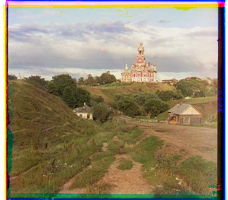
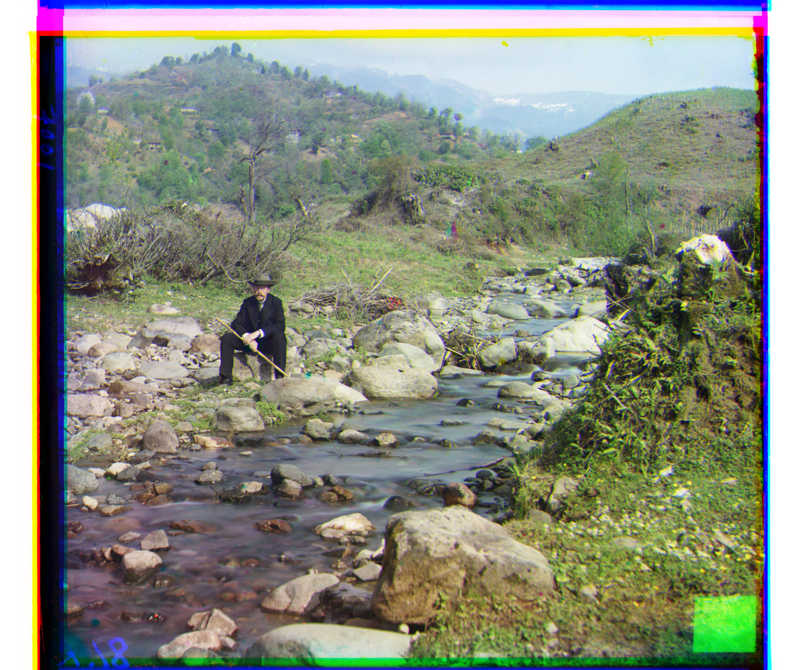

Cathedral (G=(5,2), R=(12,3))
Monastery (G=(-3,2), R=(3,2))

Tobolsk (G=(3,2), R=(6,3))

Church (G=(23,-4), R=(56,-9))
Emir (G=(33,8), R=(107,17))

Harvesters (G=(59,10), R=(121,7))

Icon (G=(41,16), R=(89,22))
Lastochikino (G=(-3,-2), R=(73,-7))

Lugano (G=(35,-11), R=(93,-28))

Melons (G=(83,4), R=(174,7))

Self Portrait (G=(71,-1), R=(161,-3))
Siren (G=(48,-7), R=(103,-19))

Three Generations (G=(52,5), R=(110,7))